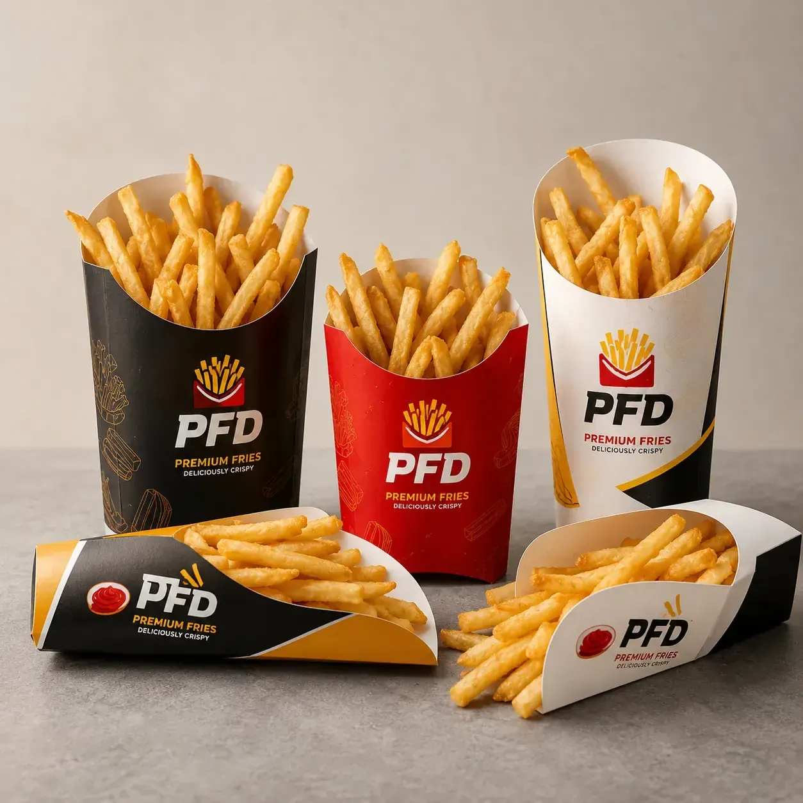

Custom French fries boxes help fast food brands serve fries, wedges and snacks with strong brand visibility and easy handling. Available in scoop cups, open-top boxes, sleeve trays and multiple sizes, these disposable paper holders are suitable for restaurants, stadium foodservice, food trucks and chain stores. We support OEM size, structure recommendation, food-grade material selection, rich logo printing, barcode placement and export packaging for global B2B buyers.

Custom French fries boxes help fast food brands serve fries, wedges and snacks with strong brand visibility and easy handling. Available in scoop cups, open-top boxes, sleeve trays and multiple sizes, these disposable paper holders are suitable for restaurants, stadium foodservice, food trucks and chain stores. This product is ideal for fast food restaurants, snack bars, food trucks, stadium vendors, QSR chains and takeaway packaging distributors. It supports Food-grade paperboard, grease-resistant board, kraft board, white card and coated paper options with Open-top serving format, grease-resistant option, stackable shipping, easy filling and strong display for fast food sales and Custom logo, bold colors, food icons, promotional graphics, QR code and franchise brand system printing.
| MOQ | 500 PCS custom printed packaging |
|---|---|
| Material | Food-grade paperboard, grease-resistant board, kraft board, white card and coated paper options |
| Features | Open-top serving format, grease-resistant option, stackable shipping, easy filling and strong display for fast food sales |
| Printing | Custom logo, bold colors, food icons, promotional graphics, QR code and franchise brand system printing |
| Applications | French fries, potato wedges, fried snacks, chicken bites, onion rings and fast food combo meals |
| Customization | Size, shape, scoop style, paper weight, print color, coating, die-cut handle and carton packing |
Send product size, quantity, artwork needs, packaging structure and shipping country to Linda Wang for a fast B2B quotation.
WhatsApp Linda Email InquiryCustom French Fries Boxes Bulk | Printed Disposable Paper Scoop Cups & Holders for Fast Food Restaurant targets high-intent B2B buyers searching for custom French fries boxes, printed fries boxes, disposable paper scoop cups, fries holders wholesale, fast food restaurant packaging, custom snack box manufacturer. The page uses commercial long-tail keywords, food packaging material details, customization data and RFQ-ready specifications that help both Google and AI search systems understand the product quickly.
French fries, potato wedges, fried snacks, chicken bites, onion rings and fast food combo meals.
We can customize dimensions, paper weight, food-contact coating, box structure, window style, insert system, logo printing, barcode or QR code placement, finish effects and export carton packing. MOQ 500 PCS. OEM/customize only.
Yes. We can print single-color or full-color branded designs for different menu lines, restaurants or promotional campaigns.
Yes. We can recommend grease-resistant paperboard or inner coating based on your food temperature and oil level.
Recommended buyer brief: product type, food application, packaging size, paper or coating requirement, quantity, artwork file, target market, compliance text and shipping country. MOQ 500 PCS. OEM/customize only.
MOQ 500 PCS - Fast Factory Quote
Click below to contact us quickly by WhatsApp or email. We can help with dieline, samples, printing, materials and worldwide shipping.
Chat on WhatsAppEmail Inquirylinda@colorprintingpackage.com